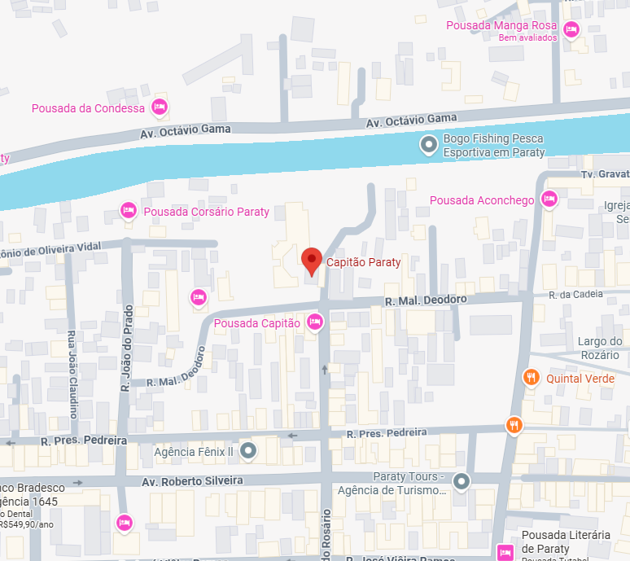

Passeio de Lancha em
Paraty
Sua Janela para o Paraíso
Aluguel de lanchas privativas para passeios de lancha inesquecíveis pelas ilhas e praias mais deslumbrantes de Paraty-RJ.
Conheça Nossas LanchasLanchas para Passeio
Escolha a Perfeita
Temos a lancha ideal para seu passeio em Paraty, combinando conforto, segurança e estilo. Aluguel de lanchas com revisões em dia feita pela Direct Boat, a melhor autorizada Mercury.
 Aceitamos PET's em nossas lanchas!
Aceitamos PET's em nossas lanchas!


Capitã Sofia
Lancha cabinada ideal para passeios de lancha em Paraty com quarto e banheiro (fechado), solarium casal na proa, churrasqueira e ducha de água doce. Perfeita para explorar as ilhas de Paraty.
Capitão Enzo
Lancha ideal para passeios de lancha em Paraty, desde casais até grupos maiores. Excelente para travessias e exploração das praias e ilhas de Paraty com conforto e segurança.


Capitão João
Banheiro (fechado), aconchegante sofá de proa, churrasqueira e ducha de água doce. Muito estável e segura por ter 2 cascos (Catamarã) e 2 motores
Roteiros de Passeio de Lancha em Paraty
Criamos experiências únicas de passeio de lancha em Paraty. Escolha um de nossos roteiros sugeridos ou personalize o seu dia perfeito navegando pelas ilhas e praias de Paraty!


Roteiro Sul: Os Clássicos
Explore os cartões postais de Paraty neste clássico passeio de lancha. Navegue por águas cristalinas e visite as praias e ilhas mais famosas de Paraty por sua beleza incomparável.
Paradas: Praia Vermelha, Ilha da Pescaria, Ilha Comprida, Praia da Lula, Lagoa Azul, Ilha da Cotia, Saco da Velha, Ilha dos Cocos.


Roteiro Norte: Refúgios
Descubra os tesouros tranquilos em um passeio de lancha pela beleza mais selvagem da Baía de Paraty, longe das rotas mais movimentadas. Ideal para quem busca exclusividade.
Paradas: Ilha do Malvão, Ilha Comprida Norte, Ilha da Sapeca, Ilha do Araújo, Ilha do Ventura.

Especial: Saco do Mamanguá
Navegue pelo único fiorde tropical do Brasil. Um cenário de filme com águas calmas, ideal para um dia de paz e contemplação.
Paradas: Direto ao Saco do Mamanguá, Praia do Buraco, Praia do Sobrado, Praia do Engenho, Praia das Flores, Praia do Crepúsculo, Praia Grande, Praia da Paca, Praia do Guardamor.
Especial: Ilha do Cedro
Um paraíso particular. Desfrute da exclusividade e da beleza de uma das ilhas mais cobiçadas de Paraty, com praias de areia branca e mar calmo.

Monte seu Roteiro
O passeio de lancha em Paraty é seu! Converse com nosso capitão e crie um roteiro 100% personalizado com as ilhas e praias de Paraty que você mais sonha em conhecer.
Perguntas Frequentes sobre Passeio de Lancha em Paraty
Tire suas dúvidas sobre nossos passeios de lancha em Paraty
Quanto custa um passeio de lancha em Paraty?
O valor do passeio de lancha em Paraty varia conforme a lancha escolhida, duração e roteiro. Entre em contato conosco pelo WhatsApp para receber um orçamento personalizado para seu grupo.
Qual a duração dos passeios de lancha em Paraty?
Nossos passeios de lancha em Paraty geralmente duram entre 4 a 8 horas, dependendo do roteiro escolhido. Você pode personalizar a duração conforme sua preferência.
Quais ilhas visitamos no passeio de lancha em Paraty?
Visitamos as principais ilhas de Paraty como Ilha Comprida, Praia Vermelha, Lagoa Azul, Ilha da Pescaria, Ilha do Cedro e muitas outras. Cada roteiro inclui diferentes paradas nas mais belas ilhas e praias de Paraty.
É seguro fazer passeio de lancha em Paraty?
Sim! Nossos passeios de lancha em Paraty são totalmente seguros. Todas as lanchas possuem equipamentos de segurança obrigatórios, revisões em dia pela Direct Boat (autorizada Mercury) e capitães experientes.
Posso personalizar meu roteiro de passeio de lancha em Paraty?
Claro! Oferecemos roteiros personalizados para passeios de lancha em Paraty. Converse com nosso capitão e monte seu roteiro ideal visitando as ilhas e praias que mais deseja conhecer.
Qual a melhor época para fazer passeio de lancha em Paraty?
Paraty é um destino incrível o ano todo! Os passeios de lancha em Paraty podem ser realizados em qualquer época.
Reserve seu Passeio de Lancha em Paraty
Entre em contato, tire suas dúvidas e garanta a data do seu passeio de lancha em Paraty. A aventura dos seus sonhos navegando pelas ilhas e praias de Paraty está a uma mensagem de distância.
Endereço:
R. Mal. Deodoro, 582 - Centro, Paraty - RJ
